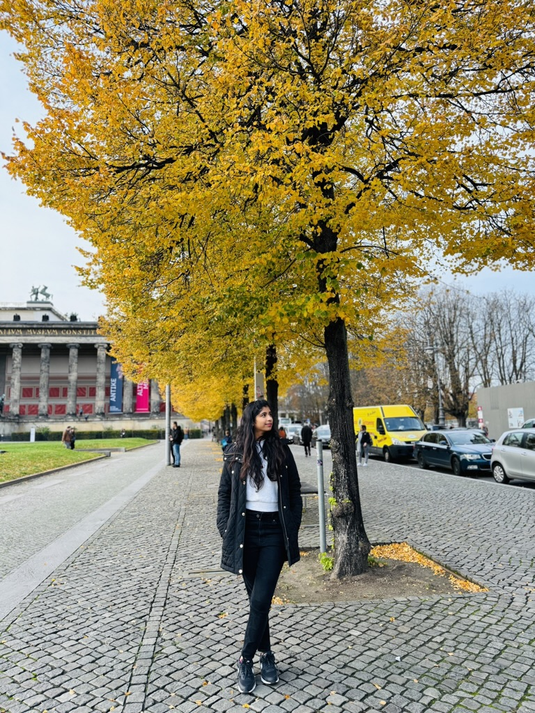
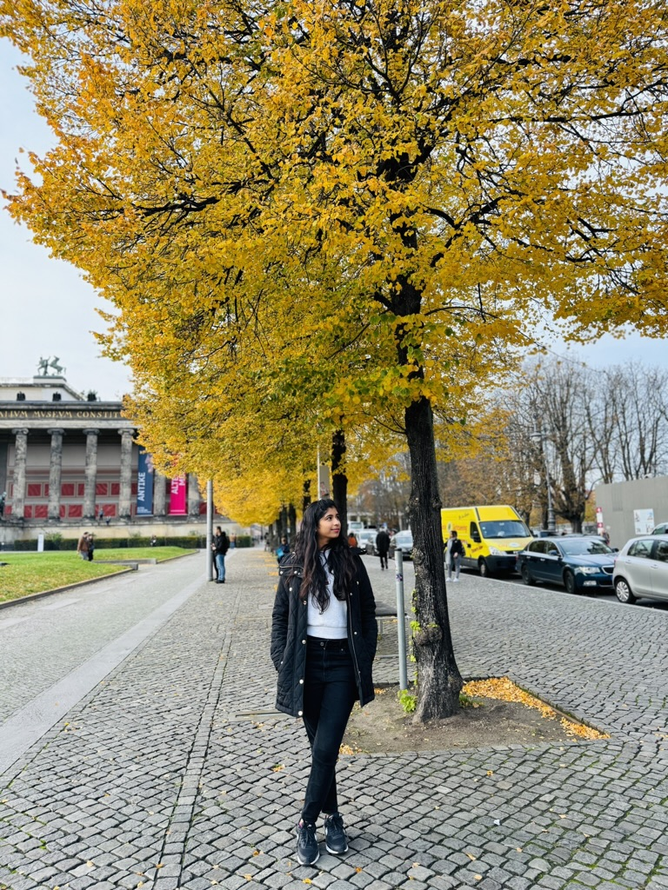
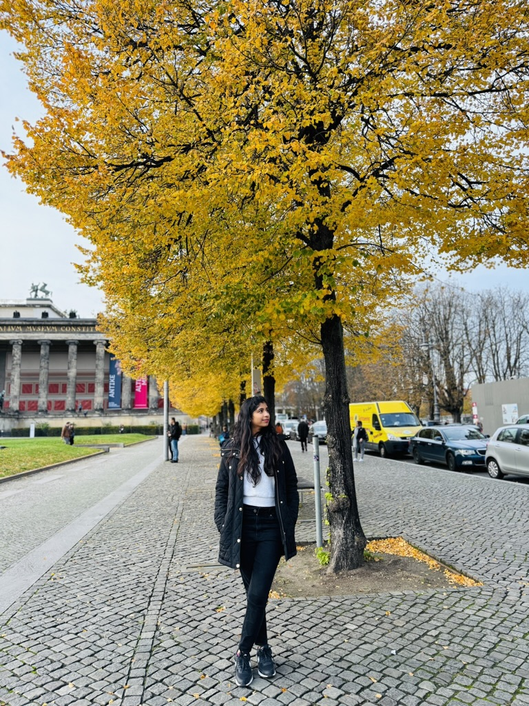

Berlin
City of History and Resilience
Where history whispers through every street corner, and the spirit of resilience transforms scars into symbols of hope and unity.

City of History and Resilience
Where history whispers through every street corner, and the spirit of resilience transforms scars into symbols of hope and unity.
Berlin stands as a testament to human resilience, where historical significance meets modern innovation, creating a unique tapestry of culture and remembrance.
The magnificent Berlin Cathedral stands as a symbol of the city's rich religious and architectural heritage. Its imposing baroque dome and ornate facades have witnessed Berlin's transformation through centuries of change.
Rising 368 meters above the city, the iconic Berlin TV Tower offers breathtaking panoramic views of the German capital. This emblematic structure has become the most recognizable symbol of Berlin's skyline.
Remnants of the Berlin Wall serve as powerful reminders of the city's divided past. These sections now stand as monuments to freedom and unity, telling stories of separation, struggle, and eventual triumph.
The Brandenburg Gate stands as Berlin's most famous landmark and a symbol of German reunification. This neoclassical monument has witnessed pivotal moments in German history and represents the triumph of unity over division.

Berlin's vibrant street art scene transforms the city into an open-air gallery. From political statements to creative expressions, the walls of Berlin tell countless stories through colorful murals and graffiti.
Berlin's iconic neoclassical monument. Symbol of German reunification. Visit at both day and night for different atmospheres. Free to visit and photograph.
Preserved section with watchtowers and documentation center. East Side Gallery features murals by international artists. Best visited early morning for fewer crowds.
UNESCO site with 5 world-class museums. Pergamon Museum and Neues Museum are highlights. Get Berlin WelcomeCard for free museum entry. Allow full day.
Iconic 368m tower with panoramic views. Book tickets online to skip queues. Revolving restaurant on top. Best at sunset for magical city lights.
Moving memorial with 2,711 concrete slabs. Underground information center. Free entry, open 24/7. Allow time for reflection and the exhibition below.
German Parliament with stunning glass dome. Free but register online 2-3 weeks ahead. Audio guide included. Sunset visits are most popular.
Berlin's iconic street food - pork sausage with curry ketchup and fries. Try at Curry 36 or Konnopke's Imbiss. The quintessential Berlin snack.
€4-6Berlin perfected this Turkish import. Mustafa's Gemüse Kebap is legendary (expect queues). Perfect late-night food after exploring the city.
€5-8Crispy potato pancakes served with apple sauce or sour cream. Traditional German comfort food. Find them at Christmas markets in winter.
€5-8Cloudy, sour wheat beer served with raspberry or woodruff syrup. Light and refreshing summer drink. Try at traditional beer gardens.
€4-6Jam-filled doughnuts covered in powdered sugar. Despite the name, locals call them Pfannkuchen. Perfect with coffee at any bakery.
€2-3Markthalle Neun on Thursdays for Street Food Thursday. Diverse cuisines from around the world. Berlin's multicultural food scene at its best.
€8-15Great Choice: Parks blooming, outdoor cafés opening. Fewer tourists than summer. Perfect weather for walking tours and biking around the city.
Peak Season: Longest days, warmest weather. Outdoor festivals and events. Book accommodation early. Perfect for exploring parks and lakes.
Best Value: Autumn colors, cultural events. Fewer crowds, lower prices. Perfect for museums and indoor attractions. Oktoberfest nearby in Munich.
Christmas Markets: Magical festive atmosphere. Cold but charming. Indoor museums and galleries shine. New Year's Eve at Brandenburg Gate is legendary.
Best for: Fast city travel. Extensive network covering entire city. Runs 24/7 on weekends. Clean, efficient, and safe at all hours.
Best for: Scenic routes through neighborhoods. Trams mainly in East Berlin. Night buses (N-lines) run when U-Bahn doesn't. Same ticket as metro.
Best for: Exploring like a local. Flat terrain, extensive bike lanes. Nextbike and other rentals available. Many hotels offer bikes free.
Best for: Central areas like Mitte. Many attractions are walkable. Download offline maps. Berlin is very pedestrian-friendly with clear signage.
From BER Airport: Airport Express train (FEX) to city - 30 mins, €3.80. S-Bahn S9/S45 also connects. Taxis expensive (€50-€60).
Zones: AB covers city center (most tourists). Single ticket €3.20, day pass €9. Buy from machines or BVG app. No barriers - validate yourself!
"Berlin is a city where history lives and breathes, where every street corner tells a story of resilience and hope."